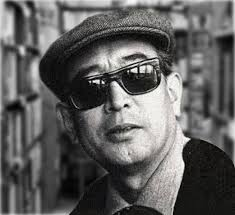

Akira Kurosawa (1910-1998) is one of the most influential filmmakers in the history of cinema. Renowned for his storytelling, visual style, and profound impact on global cinema, Kurosawa's career spanned over five decades. He created some of the most iconic films ever made and is often credited with revolutionizing the way stories are told on film. His contributions extend far beyond his native Japan, as his works became a bridge between Eastern and Western cinema.
Kurosawa was born in Tokyo and grew up in a tumultuous time in Japan's history. After studying art, he joined the Japanese film industry in the 1930s, initially working as an assistant director. By the late 1940s, he had become a fully recognized director with his breakthrough film Rashomon (1950), which won the Golden Lion at the Venice Film Festival.
Kurosawa faced personal and financial difficulties in his later years, especially with his projects in the 1970s and 1980s. Despite struggles, his legacy as a pioneer of world cinema remains indelible.